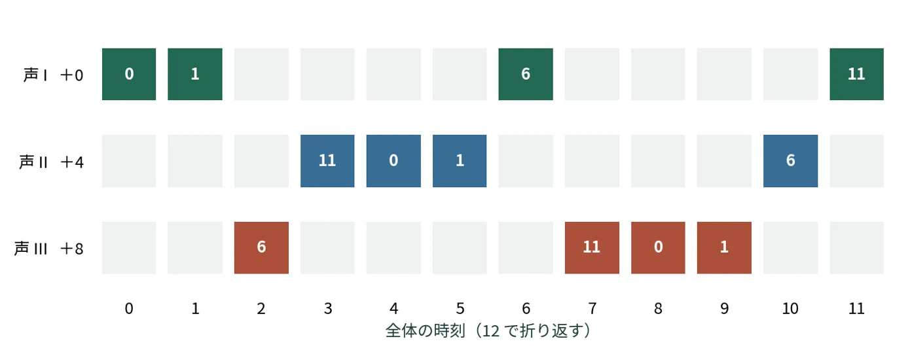

第50章 休符を敷き詰めると一つの線ができる
休符を他の声で埋め尽くす、リズムのカノン（タイル張り）を設計する。
この章で学ぶこと
- 一次元のタイル張り A⊕B を理解する
- 三声の譜例《継ぎ目》を作り、検算する
- 畳み込みで「穴」と「衝突」を数える
三人が同じリズムを、違う時刻から打つ。ある声の休みを誰かの打点が常に埋め、しかも二人は決して同時に打たないとしたら、三人を合わせて聞いた耳には何が残るだろう。全員が同じ木片を同じ強さで打つなら、何の変哲もない等間隔の一列に聞こえうる。ところが楽器の音高を三つに分けるだけで、表面の等速運動から、不規則に行き来する旋律が浮かぶ。ここでは休符を含む模様を、一枚のタイルとみなして組曲の一節を設計する。
一次元のタイル張り
一周 個の目盛りを持つ時計を考える。 は だけ違う整数を同じ場所とみなした集合である。一人が打つ場所の集合を 、各奏者が入り始める位置の集合を と書く。開始を 遅らせた人は に打つ。時刻 を担当する声がただ一つある条件は
ここで は「ただ一つ存在する」を表す。このとき と書く。タイルの面積にあたるのは一人の打点数 、タイルの枚数にあたるのは人数 。従って は必要条件である。たとえば十二目盛り四打を三人に配るとき、人数の帳尻は合う。しかし三人が入る場所を選び損ねれば、重複する時刻と無人の時刻が同数だけ生まれる。
三声の譜例《継ぎ目》
第一声は十二目盛りの 、第二声は四目盛り遅れ、第三声は八目盛り遅れで入る。最初の一周を過ぎれば各声の周期が重なる。下の図は三声がそろった後の一周である。各色の数字はもとの第一声のどの打点が来たかを示す。十一目盛り目の音は次の零、一次刻の音に続き、第一声だけ聴くと三連打を挟むように聞こえる。一周の先頭が音楽上の句頭と一致するとはかぎらない。

証明を読む（読まなくても先へ進めます）
を で割った余りは順に で、各剰余がちょうど一度ずつ現れる。任意の時刻 を選ぶと、 を満たす は一意。 は の倍数なので、十二を法とすれば のどれか一つである。その値を とすれば所望の表示を得る。この証明から別の譜面が量産できる。 の一打を四目盛り移動しても、余りが変わらず、敷き詰めは保たれる。打撃の疎密は変わるのに総体の足取りは揺れない。
波形を足す前の畳み込み
録音の残響を計算したデジタル信号処理の章と、ここでの「足し合わせる」操作に接点がある。集合 の要素なら 、他は とする関数を 、同じく の関数を と書く。時刻 の打数 は、次式の循環畳み込みで与えられる。
理由は、積が になる項が かつ の解を一つずつ数えるからである。添字は で折り返す。 がすべて なら完成、 なら穴、 以上なら衝突を示す。これを残響計算の言葉で読むと、外から与える打点が 、一打が呼び出す応答の型が に相当する。実際に聞く音には各音の持続と響きがあるから、打点が重ならない作品でも、鳴り終わる前の二声の波形は重なりうる。
《継ぎ目》の試聴では一周目は声I、二周目から声II、三周目から声IIIを鳴らす。各声は図の周期上の位相で加わる。四周目までは低い音・中音・高い音を一声ずつに割り当てた。五周目から三声すべてを同じ音高・音色にした。目を閉じて模様が消えたように聞こえる境目を覚え、紙の図を見ながらもう一度同じ部分を聴く。二回目は切れ目を自分で補ってしまうかもしれない。声部を区別する手掛かりが音に含まれるか、知っている譜面を頼りに内声を追っているか、二通りの聴取がそこにある。
作曲家の紙の上で
トム・ジョンソンの《Tilework for String Quartet》の図解映像では、四人の映像を見る代わりに、作曲家がリズムの表し方を提示する。六音の型に注目し、どの形が平行移動して別の声部を作るかを追う。次に本人の論考の譜例で、空所を残したり異なる手続きを重ねたりする例を探す。数学の定義を少し外した部分も記すと、作曲家がどこで選択を行ったかを読める。上の《継ぎ目》は十二目盛り四打で作った独立の小品であり、ここで両曲を結ぶのは、音列の引用よりも「平行移動した型が時間をどのように覆うか」という問いである。
やってみよう
演習と解答。 《継ぎ目》の第三声を一目盛り遅らせると何が起きるか。第三声の打点は から へ動く。 が無人になり、もともと第二声の打つ は二打が衝突する。目盛り全体の打数の和は十二のままなので、総数だけ調べる検査はこのずれを見逃す。
ここだけ押さえる
- 必要条件は「一人の打点数×人数＝一周の目盛り数」。
- 打点を4目盛り動かしても4で割った余りが同じなら、敷き詰めは崩れない。
- 総打数だけの検査では、穴と衝突の打ち消し合いを見逃す。
この章の資料
- 作曲家の譜例と解説。完全に埋まる例の次に、穴を残すことを許した例を読み、両者の作曲上の用途を比べる。Tom Johnson, Tiling in My Music
- 作曲家による弦楽四重奏版の図解映像。一巡分だけ停止して入口に番号を振る。Tom Johnson, Illustrated Music 17
- 集合の直和からフーリエ解析に至る数学的見取図。本章を終えてから、周期を持つ因子の定義まで進める。Emmanuel Amiot, Why Rhythmic Canons Are Interesting